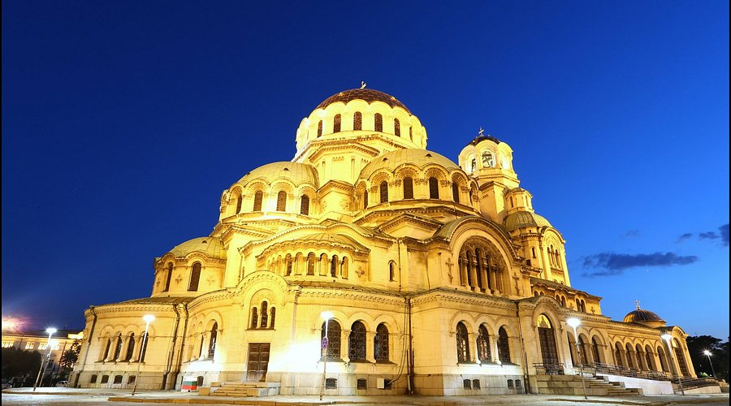

Sofia, the capital of Bulgaria, is one of the oldest cities in Europe and serves as the country’s political, cultural, and economic center. Located in the western part of the country at the foot of Vitosha Mountain, Sofia offers visitors a fascinating mix of historical landmarks, modern infrastructure, and vibrant urban life. The city has existed for more than two thousand years, and its long history is visible in its architecture, archaeological remains, and religious sites.
One of Sofia’s most recognizable landmarks is the Alexander Nevsky Cathedral. Built in the early twentieth century, the cathedral is one of the largest Eastern Orthodox churches in the world and is famous for its golden domes and beautiful interior decorations. Nearby visitors can also find historical churches such as Saint Sofia Church and the Russian Church, which demonstrate the deep religious traditions of the city.
Another popular destination in Sofia is Vitosha Boulevard, a lively pedestrian street filled with restaurants, cafes, and shops. This area is a favorite place for both locals and tourists to relax, enjoy Bulgarian cuisine, and experience the atmosphere of the city. From this street, visitors can also see a stunning view of Vitosha Mountain, which rises just outside the city and offers hiking, skiing, and scenic nature spots.
Sofia is also home to many museums, galleries, and cultural institutions. The National History Museum and the National Art Gallery display important artifacts and works of art that represent Bulgaria’s cultural heritage. For visitors interested in learning more about the country’s past, Sofia provides an excellent introduction before exploring other destinations across Bulgaria.